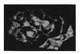
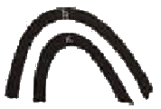
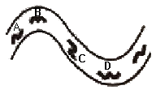
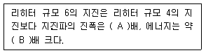
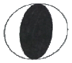
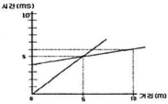
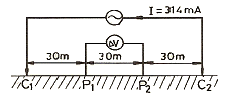
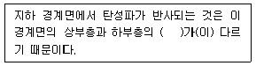
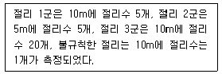

응용지질기사 (2013-03-10 기출문제)
1과목: 암석학 및 광물학
1. 퇴적암의 구분에서 사암은 기질(matrix)의 함량에 따라서 잡사암과 이질사암으로 나누어진다. 이때의 기질의 성분 함량 기준은?
- 5%
- 15%
- 30%
- 50%
(정답률: 71%)

2. 셰일과 이암의 차이를 가장 잘 나타낸 것은?
- 석영의 함량
- 화석의 유무
- 암석의 색깔
- 박리성의 유무
(정답률: 71%)
3. 다음 중 변성작용이 일어나는 장소로 옳지 않은 것은?
- 거대한 산맥의 하부
- 마그마가 상승하는 지역
- 해구에서 판이 섭입하는 지역
- 순상지의 지표 부근
(정답률: 88%)
4. 다음 중 안산암에 대한 설명으로 옳지 않은 것은?
- 화산암에 속한다.
- 알칼리 장석이 주성분 광물이다.
- 유색광물은 주로 흑운모와 각섬석이다.
- 섬록암과 비슷한 화학성분으로 구성되어 있다.
(정답률: 62%)
5. 다음 중 퇴적물을 퇴적암으로 변화시키는 속성작용의 일반적인 범주에 속하지 않는 것은?
- 재결정작용, 용해작용
- 교결작용, 치환작용
- 용융작용, 변성작용
- 자생작용, 생물교란작용
(정답률: 69%)
6. 사문암의 변성되기 전 원암으로 가장 적절한 것은?
- 감람암
- 섬록암
- 섬장암
- 화강암
(정답률: 56%)
7. 다음 중 조화적 관입암체에 해당하는 것은?
- 암상
- 암맥
- 저반
- 암주
(정답률: 69%)
8. 다음 중 가장 높은 압력에서 만들어지는 변성상은?
- 각성암
- 백림암상
- 에클로자이트상
- 청색편암상
(정답률: 73%)
9. 다음 중 유문암질 마그마의 설명으로 옳지 않은 것은?
- 안산암질 마그마에 비해 점성이 크다.
- 현무암질 마그마에 비해 유동성이 크다.
- 현무암질 마그마에 비해 용존가스 함량이 높은 편이다.
- 화산분출시 전체 마그마의 10% 정도를 차지한다.
(정답률: 83%)
10. 다음 중 현정질 화성암의 구성 광물이 대, 중, 소의 다양한 크기의 입자로 구성되어 있는 조직은?
- 구상 조직
- 세리에이트 조직
- 반정질 조직
- 구과상 조직
(정답률: 52%)
11. 다음 중 광물의 생성환경을 알아보려면 어떤 분석이 적합한가?
- 비색분석
- 동위원소분석
- 원자흡수분광분석
- 중성자활성분석
(정답률: 74%)
12. 정장석에서 관찰할 수 있는 칼스바드 쌍정(Carlsbad twin)은 ㄷ 축을 쌍정축으로 몇 도 회전하여 이루어지는가?
- 30°
- 60°
- 120°
- 180°
(정답률: 66%)
13. 불투명 광물의 연마편상에서 반사광을 이용하여 관찰할 수 없는 것은?
- 반사도
- 색
- 이방성
- 간섭색
(정답률: 57%)
14. 다음 결정형 중 등축정계에 속하지 않는 것은?
- 팔면체
- 능면체
- 육면체
- 십이면체
(정답률: 72%)
15. 다음 원소들의 전자구조에서 L각에 8개의 전자를 가지고 있는 원소가 아닌 것은?
- Na
- Si
- F
- K
(정답률: 50%)
16. 빛이 고밀도 물질에서 저밀도 물질로 입사할 때, 임계각 이상의 입사각을 가지고 입사한 광선이 나타내는 현상은?
- 난반사 현상
- 복굴절 현상
- 전반사 현상
- 단굴절 현상
(정답률: 68%)
17. 다음 중 용융점이 가장 낮은 광물은?
- 휘안석
- 석류석
- 정장석
- 석영
(정답률: 40%)
18. 광물 등의 원자결합방식과 특성과의 관계에 대한 설명 중 옳지 않은 것은?
- 공유결합을 하고 있는 광물들은 대체로 용해가 잘 되지않고, 대단히 높은 용융점과 비등점을 가지고 있다.
- 금속결합을 하고 있는 광물들은 전기와 열에 대한 높은 전도성을 가진다.
- 광물 중에서 이온결합의 좋은 예는 소금과 형석에서 찾아볼 수 있다.
- 유기탄소화합물에서 분자내의 결합은 잔류결합이고, 분자간에는 공유결합으로 되어 있다.
(정답률: 84%)
19. 결정이 성장하면서 일정한 모습을 가지게 되는데 이를 정벽(habit)이라 한다. 다음 그림은 적철석에서 흔히 관찰되는 정벽인데 무엇이라 하는가?

- 신장상
- 방사상
- 어란상
- 수지상
(정답률: 76%)
20. 다음 중 동질이상의 관계를 갖는 광물의 연결로 옳지 않은 것은?
- 방해석-아라고나이트
- 석영-트리디마이트
- 황철석-백철석
- 백운석-금홍석
(정답률: 50%)
2과목: 구조지질학
21. 다음 중 추가령열곡이 해당하는 지형은 무엇인가?
- 단층곡
- 배사곡
- 메사
- 사행천
(정답률: 48%)
22. 이전 지층과 새 지층 사이에 명확한 변형에 의한 구조적인 단절을 지시하는 부정합의 형태로서 가장 특징적인 것은?
- 비정합(disconformity)
- 난정합(nonconformity)
- 경사부정합(angular unconformity)
- 기저부정합(basal unconformity)
(정답률: 63%)
23. 점완단층(listric fault)에 대한 설명으로 옳은 것은?
- 단층의 경사각이 일정하다.
- 인장력에 의해서도 발생한다.
- 지반에 습곡이 형성된 결과 발생한다.
- 지하로 갈수록 수직 낙차가 증가한다.
(정답률: 63%)
24. 대륙지각의 평균 밀도가 2700kg/m3일 때 지각 하부의 900m 깊이에서의 정암압력(lithostatic pressure)은?
- 23.8MPa
- 238Mpa
- 47.6MPa
- 475Mpa
(정답률: 57%)
25. 다음 중 지구의 내부 구조에 대한 설명으로 옳지 않은 것은?
- 지각은 대륙지각과 해양지각으로 구분되어 해양지각의 평균밀도는 대륙지각보다 높다.
- 맨틀은 상부맨틀과 하부맨틀로 구분되며 상부맨틀의 대표적인 암석은 화강암이다.
- 외핵은 액체상태이며 지구의 자기장을 발생시키는 금속 힘의 운동은 외핵에서 일어난다.
- 내핵은 높은 온도에도 불구하고 지구 중심부와 엄청난 압력에 의해서 고체상태이다.
(정답률: 59%)
26. 다음 그림을 설명하는 용어 중 맞는 것은? (단, Ta, J, K는 각각 지질시대를 나타내는 약자이며, 순서대로 Triassic, Jurassic, Cretaceous를 의미한다.)

- 배사(anticline)
- 향사형 배사(synformal anticline)
- 향사(syncline)
- 배사형 향사(antiformal syncline)
(정답률: 56%)
27. 동태평양 융기대(East Pacific Rise)는 어느 판 경계에 해당하는가?
- 발산형
- 섭입형
- 충돌형
- 변환단층형
(정답률: 59%)
28. 습곡구조에서 발달하는 층간 소습곡구조는 큰 규모의 습곡구조를 유추하는데 도움이 된다. 아래 그림에서 각 위치에서 적절하지 못한 소습곡 구조는?

- A
- B
- C
- D
(정답률: 75%)
29. 다음 ( )안의 내용으로 옳은 것은? (단, 보기항은 A, B의 순서이다.) (문제 오류로 현재 복원중입니다. 보기 내용을 아시는 분들께서는 오류 신고를 통하여 보기 작성 부탁 드립니다. 정답은 4번입니다.)

- 10, 32
- 20, 64
- 복원중 (정확한 보기 내용을 아시는분께서는 오류 신고를 통하여 내용 작성부탁 드립니다.)
- 복원중 (정확한 보기 내용을 아시는분께서는 오류 신고를 통하여 내용 작성부탁 드립니다.)
(정답률: 52%)
30. 만약 100MPa의 전단응력이 0.1million year(my)의 전단변형율을 형성했다면, 이 물질의 점성도(viscosity)는?
- 1MPa-my
- 10MPa-my
- 100MPa-my
- 1000MPa-my
(정답률: 63%)
31. 다음 중 지자기의 줄무늬가 대칭적으로 발견되는 곳은?
- 수렴경계
- 발산경계
- 충돌경계
- 변환단층경계
(정답률: 58%)
32. 주향과 경사가 각각 N60°E, 60° SE와 N60°W, 30° SW인 두 면이 있을 때, 두 면이 만나는 교차선의 방향(trend)은?
- NE
- SE
- SW
- NW
(정답률: 61%)
33. 다음 중 우리나라의 동해(East Sea)는 어느 것에 해당되는가?
- 호상열도(Island arc)
- 배호분지(Back-arc basin)
- 전호분지(Fore-arc basin)
- 전호해령(Fore-arc ridge)
(정답률: 84%)
34. 다음 중 정단층 운동에 수반되어 나타나는 특징적인 구조로 보기 어려운 것은?
- 성장단층(growth fault)
- 꽃구조(flower structure)
- 지루와 지구(horst and graben)
- 회전 배사구조(roll-over anticline)
(정답률: 71%)
35. 다음 조선누층군에 해당하는 지층 중 캄브리아기 지층이 아닌 것은?
- 장산 규암층
- 풍촌 석회암층
- 마차리층
- 영흥층
(정답률: 33%)
36. 다음 중 사행천의 유속이 느린 안쪽에 퇴적되어 만들어진 지형은?
- 배후습지
- 범람원
- 단구
- 포인트바
(정답률: 46%)
37. 다음 중 아래 그림(진원기구해)과 관계가 가장 적은 지진은? (단, 방향성은 고려하지 않음)

- 1906년 미국 샌프란시스코지진
- 1923년 일본 동경지진
- 1999년 대만 치치지진
- 2004년 인도네시아 수마트라지진
(정답률: 78%)
38. 태평양 주변에는 환태평양 지진대라고 하여 태평양 주변을 따라 지진이 많이 발생한다. 이렇게 많은 지진이 발생하는 가장 큰 이유는?
- 바다와 육지의 경계이기 때문에
- 화산활동의 경계이기 때문에
- 판의 경계부가 많기 때문에
- 태평양판이 워낙 큰 판이기 때문에
(정답률: 68%)
39. 다음 중 광산 단층대와 가장 관련이 없는 단층은?
- 옥동단층
- 모량단층
- 밀양단층
- 동래단층
(정답률: 56%)
40. 다음 중 14C 동위원소방법에 의해 연대측정이 가능한 물질로 가장 적합하지 않은 것은?
- 나무조각
- 동물의 뼈
- 쳐어트
- 조개껍질
(정답률: 87%)
3과목: 탐사공학
41. 다음 중 유도분극탐사에서 가장 많이 사용하는 전극 배열법은?
- 웨너 배열법
- 쌍극자 배열법
- 리 배열법
- 슐럼버져 배열법
(정답률: 59%)
42. 다음의 수평 2층 구조의 주시곡선도에 대한 설명으로 옳은 것은?

- 상부층의 속도가 하부층의 속도보다 크다.
- 굴절파가 도달되지 않는 거리는 음원으로부터 5m 이다.
- 굴절파가 처음으로 초동으로 나타나는 거리는 10m 이다.
- 하부층의 속도는 5000m/sec이다.
(정답률: 37%)
43. 굴절법 탄성파 탐사에서 음원으로부터 굴절파가 최초로 나타나는 거리를 임계거리라 한다. 수평 2층 구조에서 제 1층의 탄성파 속도가 0.8km/sec, 제 2층의 속도가 2.4km/sec, 제 1층의 두께가 20m일 경우 임계거리는?
- 4.24m
- 8.49m
- 14.14m
- 17.51m
(정답률: 40%)
44. 지하투과 레이다 탐사의 적용분야가 아닌 것은?
- 터널배면 라이닝 검사
- 구조물의 비파괴 검사
- 심부 지각구조 탐사
- 고고학 유적탐사
(정답률: 48%)
45. 다음 중 지열 탐사에 이용되는 물리적 현상에 대한 설명으로 옳은 것은?
- 뜨거운 상태의 암석은 S파의 진폭이 감소한다.
- 뜨거운 상태의 암석은 P파의 속도가 증가한다.
- Qurie점 이상의 온도에서 암석은 잃었던 자성을 얻게 된다.
- 뜨거운 상태의 암석의 전기비저항은 매우 높다.
(정답률: 50%)
46. 다음 그림과 같은 웨너(Wenner) 전극배열법에 의한 겉보기비저항 값은 얼마인가? (단, P1, P2간의 전위차 △V=1000mV)

- 300Ω-m
- 600Ω-m
- 900Ω-m
- 1200Ω-m
(정답률: 56%)
47. 감마선의 컴프턴 산란을 이용하여 암석의 체적밀도를 측정하는 물리 검층법은?
- 자연감마선 검층
- 밀도 검층
- 중성자 검층
- 음파 검층
(정답률: 78%)
48. 원소들의 분산이 일어나는 지구화학적 환경 중 2차 환경에 대한 설명으로 옳지 않은 것은?
- 화성활동이나 변성작용이 일어나는 환경이다.
- 온도와 압력이 낮고, 산소와 이산화탄소의 함량이 높다.
- 유체의 이동이 비교적 활발한 환경이다.
- 일반적으로 지하수면 상부의 지표 부근의 환경을 말한다.
(정답률: 45%)
49. 전기비저항 검층을 통해서 알 수 있는 정보가 아닌 것은?
- 지층의 공극률
- 지층의 물 포화율
- 지층의 변형률
- 지층의 탄화수소 포화율
(정답률: 66%)
50. 반사법 탄성파 탐사를 이용하여 얻은 자료에서 지표하부의 경사면에 의해 발생하는 겉보기반사정(apparent reflecting point)을 실제의 위치로 이동시키거나 회절파를 제거할 목적으로 실시하는 자료처리의 과정은?
- 구조보정(migration)
- 정보정(static correction)
- 공심점 모음 중합(CDP gather stack)
- 수직경로시차 보정(normal moveout correction)
(정답률: 56%)
51. 굴절법 탄성파탐사에서 실제로 존재하는 층이 탐지되지 않을 때 그 층은 숨은층(hidden layer)이라고 한다. 다음 중 숨은층이 발생하는 원인으로 옳지 않은 것은?
- 층의 두께가 입사파의 한 파장보다 클 경우
- 하부층의 속도가 상부층의 속도보다 더 낮을 경우
- 상부층과 하부층의 속도차이가 매우 작을 경우
- 수진기의 간격이 너무 클 경우
(정답률: 62%)
52. 어떤 철 광산 지역에서 중력탐사를 실시할 때 해발고도가 100m이다. 이때 고도보정 값은 얼마인가? (단, 암석의 평균밀도 값은 2.8g/cm3이다.)
- 1.91mGal
- 19.12mGal
- 191.2mGal
- 1912mGal
(정답률: 73%)
53. 0℃, 760mmHg의 공기 중에서 1cm3 당 단위 정전하를 띠도록 하는 방사선을 의미하는 단위는?
- 렌트겐
- 큐리
- 암페어
- 패러데이
(정답률: 79%)
54. 지구화학탐사에서 토양을 분류할 때 지형 · 모재 · 시간등의 영향을 받아서 생성되는 토양은?
- 간대성 토양
- 성대성 토양
- 비성대성 토양
- 잔류 토양
(정답률: 65%)
55. 다음 중 방사능탐사에서 주목되는 원소가 아닌 것은?
- U
- Th
- K
- Ca
(정답률: 71%)
56. 외부 자기장을 서서히 증가시키면 강자성 물질의 자기유도는 원점으로부터 곡선적으로 증가하다가 어느 한계에 도달하면 더 이상 증가하지 않으며, 외부자기장을 감소시키면 자기유도도 감소하나 처음 증가했던 곡선을 따라 감소하지 않고 일정량의 잔류자기가 남게되는 곡선적인 관계를 무엇이라고 하는가?
- 항자기력 곡선(coercive force loop)
- 자기 쌍극 곡선(magnetic dipole loop)
- 표준 곡선(standard curve)
- 자기이력 곡선(hysteresis loop)
(정답률: 78%)
57. 반사법 탄성파탐사에 의해 획득한 48개의 트레이스를 갖는 한 세트의 CDP 자료가 있다. NMO 보정 후 중합하면 총 몇 개의 트레이스가 생성되는가?
- 1개
- 12개
- 24개
- 48개
(정답률: 55%)
58. 다음 중 지하투과 레이다 탐사에 대한 설명으로 옳지 않은 것은?
- 수 10mHz에서 수 GHz 주파수 대역의 전자기 펄스를 이용하는 탐사법이다.
- 매질간 유전율의 차이에 의한 전자기파의 반사와 회절현상 등을 측정한다.
- 건조한 사암이나 역암 등의 구조에서는 전자기파의 심도에 따른 감쇄가 커져 적용이 어렵다.
- 사용이 간편하고 분해능이 높은 비파괴 탐사법이다.
(정답률: 66%)
59. 다음 ( )안에 알맞은 것은?

- 두께(depth)
- 반사각(reflection angle)
- 음향 임피던스(acoustic impedance)
- 임계거리(critical distance)
(정답률: 75%)
60. 농도가 다른 용액들 사이에서 여러 가지 이온들의 기동성(mobility)의 차에 기인하는 전위는?
- 전기역학적 전위
- 확산 전위
- 셰일 전위
- 광화 전위
(정답률: 63%)
4과목: 지질공학
61. 암반조사결과, 아래와 같이 3개의 절리군과 하나의 불규칙한 절리가 조사되었다. 이 암반의 체적절리계수(Jv, Volumetric Joint Count)의 값은?

- 3.0개/m3
- 3.2개/m3
- 3.4개/m3
- 3.6개/m3
(정답률: 52%)
62. 통일분류법에 의한 조립토의 분류에서 200번체 통과율이 5% 미만이고, 입도가 좋은 경우 해당하는 기호는?
- SC
- SM
- GW
- GM
(정답률: 76%)
63. 암석의 퐁화 정도를 측정하기 위한 지수 시험법(Index test)으로 적당한 것은?
- 크립시험
- 슬레이크 내구성 시험
- 평판재하시험
- 피로시험
(정답률: 68%)
64. 2층의 수평 퇴적층이 있다. 첫 번째 층의 두께는 10m, 수평방향 투수계수는 5 x 10-3cm/s이고, 두 번째 층의 두께는 20m, 수평방향 투수계수는 2 x 10-3cm/s 일 때 수평방향의 평균 투수계수는 얼마인가?
- 2 x 10-3cm/s
- 3 x 10-3cm/s
- 4 x 10-3cm/s
- 5 x 10-3cm/s
(정답률: 73%)
65. 충적층의 비포화대 내에 저투수성 점토층이 협재되어 있어 자유면 지하수의 수평범위가 국부적으로만 분포되어 있는 대수층을 무엇이라 하는가?
- 피압 대수층
- 지연 대수층
- 준 대수층
- 부유 대수층
(정답률: 69%)
66. 지반의 강도를 증가시키고 용수와 누수를 방지하기 위해 지반속에 응결제를 넣어 고결시키는 방법은?
- 약액주입공법
- 샌드드레인 공법
- 프리로딩공법
- 웰포인트공법
(정답률: 76%)
67. 사면에서의 암반분류법으로 사용되는 SMR법에서 고려되는 보정요소로 옳지 않은 것은?
- 불연속면과 절취사면의 주향차이각
- 평면파괴 시 불연속면의 경사각
- 불연속면과 절취사면 마찰각의 상관관계
- 굴착방법
(정답률: 62%)
68. 대규모 산사태의 원인으로 적합하지 않은 것은?
- 집중 강우
- 암석 포행
- 지진 진동
- 화산 분출
(정답률: 69%)
69. 다음 중 현지암반의 변형계수를 측정할 수 있는 시험방법이 아닌 것은?
- 공내팽창계시험
- 평판재하시험
- 압력터널시험
- 응력해방시험
(정답률: 28%)
70. 암반분류법인 Q분류법에 대한 설명으로 옳지 않은 것은?
- 암반특성을 평가하여 지보량을 산정하기 위해 Barton등 (1974)에 의해 제안되었다.
- (RQD/Jn) 항은 암반구조를 나타내며, 최대값과 최소값 사이에서 최대 200배 차이가 난다.
- (Jr/Ja) 항은 절리면 또는 충전물의 거칠기 및 마찰특성을 나타낸다.
- (Jw/SRF) 항에서는 터널 굴착 현장에서의 지하수압 및 현장응력 수준이 고려된다.
(정답률: 70%)
71. 터널 굴착시 지보재로 사용되는 록볼트의 지보효과로 옳지 않은 것은?
- 차수효과
- 내압효과
- 원지반 아치형성효과
- 봉합효과
(정답률: 57%)
72. 지반침하의 형태에 따른 분류 중 골형 침하(trough subs dence)의 특징으로 옳지 않은 것은?
- 급경사층에서 발생하는 경향이 있다.
- 오랜 시간에 걸쳐 서서히 발생한다.
- 넓은 지역에 걸쳐 발생한다.
- 지표 침하량의 크기가 침하 면적에 비해 작다.
(정답률: 71%)
73. 일축압축시험 시 암석 시험편 양끝단과 가압판과의 사이에 발생하는 마찰효과(end effect)에 대한 설명으로 옳지 않은 것은?
- 시험편 내 마찰효과가 작용하는 부분이 상대적으로 클수록강도는 감소한다.
- 마찰효과에 의해 시험편 양끝단에는 전단응력이 발생한다.
- 마찰효과로 인해 시험편 양끝단에 가해지는 압축응력은 주응력이 아니다.
- 마찰효과의 영향을 감소시키기 위해서는 시험편의 길이/직경 비가 적어도 2는 되어야 한다.
(정답률: 52%)
74. 절리면의 전단강도식 중 Barton이 제안한 관계식에 사용되는 변수에 해당하지 않는 것은?
- 절리면의 기본마찰각
- 절리면의 압축강도
- 절리면의 거칠기 계수
- 절리면의 팽창각
(정답률: 60%)
75. 토립자의 비중이 2.72인 흙의 전체단위중량이 1.92g/cm3이고, 함수비가 18%라고 할 때 이 흙의 수중단위중량은?
- 1.03gcm3
- 1.75g/cm3
- 2.24g/cm3
- 2.89g/cm3
(정답률: 32%)
76. 표준관입시험시 사용되는 샘플러로 자갈이나 암반층을 제외한 모든 토질의 교란시료를 채취하는 데 가장 널리 사용되는 샘플러의 종류는 무엇인가?
- 분리형 원통 샘플러(split spoon sampler)
- 얇은 관 샘플러(thin wall tube sampler)
- 고정 피스톤 샘플러(stationary piston sampler)
- 이중관 샘플러(double tube core barrel)
(정답률: 85%)
77. 흙의 동상현상에 대한 설명으로 옳지 않은 것은?
- 흙속의 물이 얼어서 부피가 팽창하여 지표면이 부풀어 오르는 현상이다.
- 자갈, 모래와 같은 조립토에서는 공극이 커서 동상이 잘 나타나지 않는다.
- 점토는 모관상승높이가 크고 불투수성이어서 동상이 가장 잘 일어난다.
- 동상을 방지하기 위해서는 지하수위를 낮추고 지하수 공급을 억제하여야 한다.
(정답률: 66%)
78. 지반의 투수계수를 측정하는 시험법 중 현장 시험법이 아닌 것은?
- 주수 시험
- 압밀 시험
- 양수 시험
- 순간 충격 시험
(정답률: 35%)
79. 현장에서 수행하는 비교적 간편한 슈미트 해머 타격시험으로 구할 수 있는 암석의 역학적 특성은?
- 전단강도
- 일축압축강도
- 인장강도
- 삼축압축강도
(정답률: 67%)
80. 다음 중 풍화(weathering)에 대한 설명으로 옳지 않은 것은?
- 건조하거나 추운 지역에서보다 열대지방이 풍화가 더 잘 일어난다.
- 고온에서 생성된 광물들은 저온에서 정출된 광물들에 비해 더 쉽게 풍화된다.
- 지표 환경과 비슷한 퇴적암이 화성암과 비교할 때 풍화에 약하다.
- 비가 많은 열대지방에서 고령석이 가수분해되면 보옥사이트가 된다.
(정답률: 34%)
5과목: 광상학
81. 다음 중 용해성 모암에 염수가 유입될 경우 일반적으로 만들어지는 광상의 형태는?
- 맥상광상
- 교대광상
- 반암형광상
- 잔류광상
(정답률: 43%)
82. 반암형 광상은 산출되는 금속원소의 종류에 의해 크게 5가지로 구분된다. 다음 중 산출되는 금속원소에 속하지 않는 것은?
- 구리
- 몰리브덴
- 금
- 은
(정답률: 45%)
83. 다음 중 열수광상에서의 모암변질작용에 해당하지 않는 것은?
- 녹니석화작용
- 견운모화작용
- 규화작용
- 주석화작용
(정답률: 59%)
84. 열극충진광상의 광석의 조직으로 가장 적절하지 않는 것은?
- 정동과 공동
- 칵케이드 구조
- 대칭적 호상구조
- 몰로폼 구조
(정답률: 13%)
85. 유리 및 광학렌즈 제조용, 표백제, 합금 및 기타 화학약품의 원료로 사용되고 있는 바륨(Ba)의 주요 광석광물은?
- 독중석(witherite)
- 금록석(chrysoberyl)
- 녹주석(beryl)
- 지르콘(zircon)
(정답률: 44%)
86. 표성부화광상의 산화부화대에서 산출하는 광물은?
- 휘동석
- 공작석
- 휘은석
- 섬아연석
(정답률: 34%)
87. 다음 중 황화광물과 그 활용도의 연결로 옳지 않은 것은?
- 방연석 - 납 생산
- 황철석 - 황산 생산
- 진사 - 수은 생산
- 황동석 - 주석 생산
(정답률: 52%)
88. 다음 중 사문암이 광역변성작용을 받아 변성광상을 이루었을 때 생성 될 수 있는 것은?
- 석고
- 활석
- 고령토
- 규조토
(정답률: 40%)
89. 우리나라에서 우라늄을 가장 많이 함유하고 있는 지층은?
- 대동계 탄질 점판암층
- 평안계 탄질 셰일층
- 옥천계 탄질 점판암층
- 경상계 탄질 셰일층
(정답률: 49%)
90. 다음 중 화산성 괴상 황화물광상에서 산출되는 전형적인 금속은?
- 주석, 텅스텐
- 구리, 아연, 납
- 금, 은
- 철, 몰리브덴, 리튬
(정답률: 70%)
91. 광화작용이나 변질작용의 형성 온도를 직간접적으로 측정하는 데는 다양한 방법이 있는데, 이에 해당되지 않는 것은?
- 광물의 용융점
- 광물의 합성법
- 유체포유물
- 방사성동위원소비
(정답률: 77%)
92. 다음 중 고령토 광상이 형성되는 지질현상과 가장 관계없는 것은?
- 풍화작용
- 열수변질작용
- 변성작용
- 퇴적작용
(정답률: 60%)
93. 반암 동광상에서 주로 수반되는 변질작용으로 구성된 것은?
- 칼륨 변질과 필릭 변질
- 탄산염 변질과 강고령토 변질
- 녹니석 변질과 황옥 변질
- 강옥 변질과 칼륨 변질
(정답률: 79%)
94. 다음 중 스카른형 광상에 해당하지 않는 것은?
- 연화광상
- 상동광상
- 달성광상
- 신예미광상
(정답률: 29%)
95. 국내 금 · 은 광상의 광화시기는 주로 쥐라기와 백악기로 분류할 수 있다. 다음 중 백악기의 천열수형 금 · 은 광상의 특징으로 옳은 것은?
- 심도 수 km 이상의 깊은 곳에서 생성되었다.
- 대보화성활동과 관련된다.
- 심한 규화작용 및 점토화 변질작용을 받았다.
- 광물의 침전 기작은 주로 불혼화에 의한다.
(정답률: 33%)
96. 다이아몬드를 함유할 수 있는 암석은 어떤 종류의 화성암에 속하는가?
- 초염기성암
- 염기성암
- 중성암
- 산성암
(정답률: 71%)
97. 우리나라의 신생대 제3기층 분포지에 해당하지 않은 것은?
- 양남분지
- 포항분지
- 공주분지
- 서귀포층
(정답률: 27%)
98. 사장석을 전형적으로 교대하거나 각섬석-흑운모를 교대하는 탄산염광물, 녹니석, 녹염석 등의 변질광물을 생성시키는 변질작용은?
- 필릭 변질작용
- 이질 변질작용
- 칼륨 변질작용
- 프로필라이트 변질작용
(정답률: 75%)
99. 우리나라 고생대 석회석광상의 특징에 대한 설명 중 옳지 않은 것은?
- 조선누층군과 평안누층군 등에 분포한다.
- 생성시기는 캄브리아기~오르도비스기와 석탄기 말에 해당한다.
- 퇴적환경은 육성층과 해성층이 모두 확인되나 주로 육성기원이다.
- 주 분포지역으로는 강원도 중부와 남부 및 충북 북부지역이다.
(정답률: 57%)
100. 우리나라 불국사 화강암의 관입 시기는?
- 백악기
- 쥐라기
- 트라이아스기
- 석탄기
(정답률: 67%)